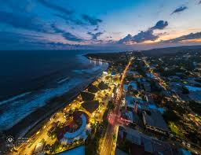

Surf city
Descubre la vida de surf en las mejores playas de El Salvador. Desde las olas perfectas de El Tunco hasta la vibrante escena de El Zonte, sumérgete en la cultura del surf y disfruta de un paraíso para los amantes del mar.

Descubre la vida de surf en las mejores playas de El Salvador. Desde las olas perfectas de El Tunco hasta la vibrante escena de El Zonte, sumérgete en la cultura del surf y disfruta de un paraíso para los amantes del mar.
